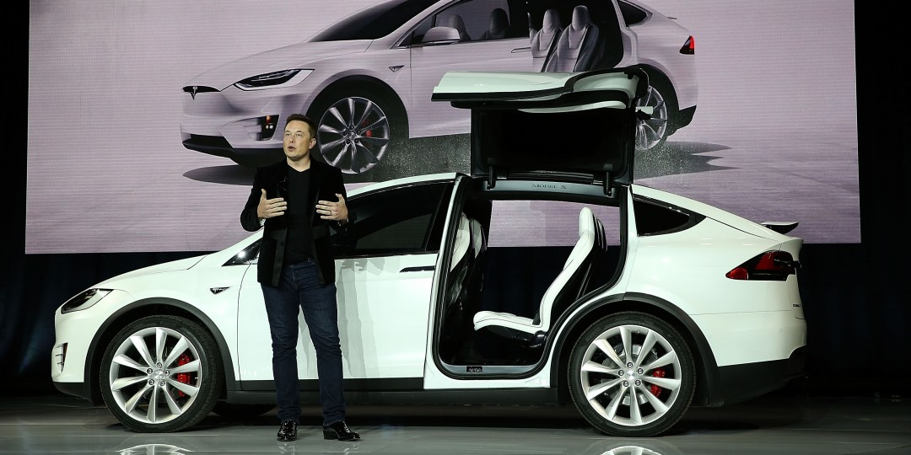

Elon Musk:-The man who is engineering for better......

Elon Musk, Tesla Unveil Model X Electric Car
TIMELINE:-
- 1995:-Unsuccessfully applied for job at Netscape.
- 1996:-Ousted as CEO of his own company Zip2.
- 1999:-The first paypal product was voted as one of the 10 worst business ideas.
- 1999:-Crashed his newly bought McLaren F1 worth $1 million.
- 2000:-Ousted from paypal while on honeymoon
- 2000:-Almost died from cerebral malaria.
Quote:- "Vacation will kill you."
- 2001:-Russians refused to sell him rockets to send mice or plants to mars.
- 2002:-Russians turned him down agian."Young boy.No." The impetus behind spaceX
- 2006:-First ever rocket launch and 1st explosion.
- 2007:-2nd rocket launch and 2nd explosion.
- 2008:-3rd rocket launch and 3rd critical failure - with NASA satellite onboard.
- Dec 2008:-Both Tesla and SpaceX on the brink of bankrupcy.
- 2013:-1st rocket failure while landing at the ocean.
- 2014:-Tesla model S had several problems with spontaneous battery combusion.
- 2015:-4th rocket explosion at launch.2nd and 3rd explosion when landing on drone ship.
- 2016:-Tesla ModelX deliveries delayed more than 18 months.
- 2016:-5th rocket explosion at launch with Facebook's satellites for Africa on board.
- Now:-Mastered the art of failing successfully and his net worth is $14.8 billion
"Success is not final, failure is not fatal: it is the courage to continue that counts.